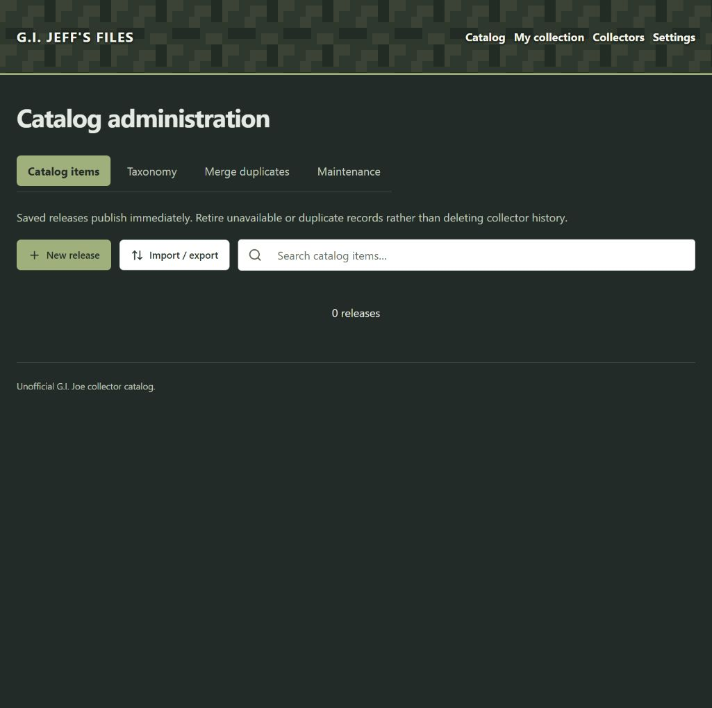
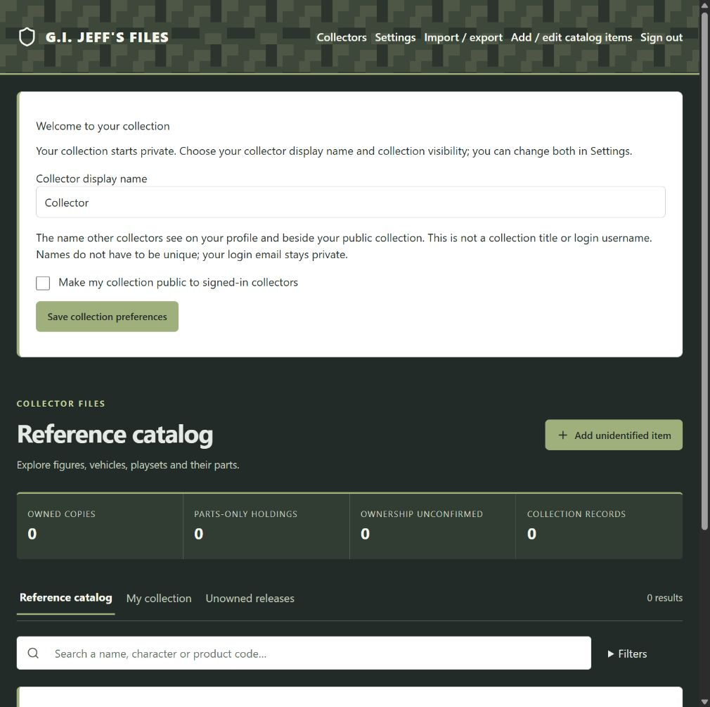

Catalog image placeholder
Illustrative release
Snow Job
Figure · A Real American HeroShow release-specific metadata and relevant collection status.
G.I. Jeff's Files combines a charcoal workspace, a restrained pixel-camo masthead, sage accents, and solid white content panels. The toys, their parts, and their history should always be the focus.
This replaces the earlier comparison of three style directions. It documents the current implementation and sets design requirements for future screens. Accessibility and responsive review rules below are targets, not a claim that every screen has passed a complete audit.
The site name in prose is G.I. Jeff's Files. The masthead wordmark is G.I. JEFF'S FILES.
Use a system sans-serif throughout. Avoid stencil body text, distress effects, decorative military ranks, and camouflage behind data.
Keep the footer description: Unofficial G.I. Joe collector catalog. The visual identity should not imply an official brand affiliation.
Choose colors by surface and purpose. White panels need dark text; the charcoal workspace needs light text. Sage primary buttons use dark lettering.
#222b28Page background; primary-button text#e5ebe4Default text on charcoal#ffffffCards, forms, dialogs, search#26332cPrimary text on light surfaces#a0b07cPrimary controls, selected admin tabs, accents#526344Badges; focus outline on paper#54624fMetadata and help on white#eef1e9Photo wells, inset groups, outline hover#c9cecaInputs and paper panel boundaries#313d33Summary strip on charcoal#718258Valuation panel accent#a32e2dDestructive-action text on white| Purpose | Color / surface | Usage |
|---|---|---|
| Header lettering | #f4f6ed on darkened camo | Wordmark and navigation with the shadow specified below. |
| Links | #c1d39e on charcoal; #456035 on paper | Use underlines for inline links; do not communicate meaning by color alone. |
| Secondary workspace text | #c0ccbe on charcoal | Descriptions, counts, footer, inactive navigation. |
| Primary hover | #b6c595 with dark text | Hover only for enabled controls. |
| Warning | #4a361c on #fff2dc; border #e4bb75 | Explain a consequence or uncertainty in words. |
| Dark separators | #4c584c; statistics #52614c | Subtle grouping, not the sole cue for an interactive element. |
The repeat is an 80 × 64 px SVG tile. Base #3d473a, lighter blocks #4e5746, darker blocks #2b342d, and a #111a1455 overlay keep the white lettering readable.
#f4f6ed.0 1px 2px #0b120b, 0 0 5px #0b120b. Keep it subtle, not a luminous glow.Use the tile already embedded in digital-camo.css; do not introduce a different pattern for each page.
Use system-ui, -apple-system, BlinkMacSystemFont, "Segoe UI", sans-serif. Keep body text in sentence case. Uppercase is reserved for the wordmark, small eyebrows, and compact category labels.
| Role | Current baseline | Guidance |
|---|---|---|
| Body | 16 px / 1.5 | Readable paragraphs and control text. |
| Page heading | 36 px, weight 750; 30 px at ≤750 px | One primary heading; tracking −0.03em. |
| Masthead wordmark | 20 px, weight 850 | Compact treatment on small screens; implementations vary by shell. |
| Catalog card title | 17 px; 15 px at ≤750 px | Allow wrapping; do not truncate the only release identifier. |
| Editor heading | 28 px; 24 px at ≤599 px | Clear separation from field labels. |
| Field labels / help | 14 px | Persistent labels; concise help below the control. |
| Form values | 16 px | Legible input text on mobile and desktop. |
| Identifiers | Monospace, subordinate to title | Show exact values for administration and transfer, with wrapping or copying. |
Section headings on this documentation page organize the guide; application component styles remain the source for exact screen typography.
Use a 4 px rhythm for new work: 8, 12, 16, 20, 24, 32, and 48 px. Use 12–16 px between related controls, 20–24 px inside panels, and larger gaps between major groups.
Page maximum width: 1500 px. Gutters: 48 px wide, 24 px at ≤1050 px, 16 px at ≤750 px.
Base corner radius: 6 px. Paper panels and cards use a 1 px border; selected content panels add a 4 px sage left accent. Existing components may retain larger radii.
Dialogs use solid white surfaces and a bounded, scrollable height. Keep titles and actions reachable on small screens. Group long editors into named sections. Use subdued hover shadows on cards; avoid decorative gradients in content panels.
Use one prominent primary action per local task. Secondary actions use white outline controls. Destructive actions need specific language and a clear explanation of the consequence.
Controls have a 44 px minimum target height. Use 18–20 px outline icons alongside text when helpful. Disabled controls are dimmed and unavailable; explain a prerequisite nearby when it is not obvious.
Keep labels visible; placeholders are examples or hints. Place errors beside the relevant field and provide a summary for long forms. Preserve entered values after a validation failure. Condition choices need tooltip guidance available on keyboard focus and touch, not hover alone.
Interactive examples are local demonstrations. Nothing is saved.
Show release-specific metadata and relevant collection status.
#eef1e9 behind images.Illustrative values only. Aggregate public/private counts are different from permission to inspect a private collection. Anonymous visitors browse the reference catalog; collector-only information needs the corresponding access checks.
Align quantities and currency consistently in tables. Show USD explicitly where context is ambiguous. Distinguish estimated values from observations and manual values, and show uncertainty or unavailable estimates in words. Collection value charts should use this palette, readable axes, and a text or table alternative; never invent a numeric estimate for missing data.
No releases yet.
Add your first reference release to start the catalog.
Loading catalog…
Keep the layout stable and identify the work underway. Announce status without repeatedly moving focus.
Example message: Release saved.
Confirm the completed action. Keep feedback near the task and available to assistive technology.
Example message: Could not save this release.
Keep your edits and try again. Explain a fix when known; do not report success before the operation completes.
For inaccessible content, explain the access requirement and offer sign-in where appropriate. For destructive confirmation, name the affected item and consequence. Avoid generic “Are you sure?” text. Use role="status" for routine live updates and role="alert" for urgent errors in the application; the static specimens above do not announce themselves as new errors.
| Use | Meaning / wording rule |
|---|---|
| Reference catalog / release | One identifiable retail release, including packaging variants and international releases. Related releases link together; a variant is a relationship to another record. |
| My collection | One collection per collector. Private by default, with a public/private choice at creation and later. |
| Collector display name | The name shown on a public profile and collector activity. It is not the collection name or the private sign-in email. |
| Owned copy | A separately tracked copy, with its own condition and parts. Do not collapse multiple copies into one condition record. |
| Parts owned | Allow 0 for the primary figure or vehicle while accessories are owned. Figures and vehicles inside multipacks are parts of that release, like a driver or weapon. |
| Complete | The item is still in its box with all parts present. This does not automatically mean mint or sealed. Partial and not sure start with unknown quantities. |
| Unknown / ownership unconfirmed | Do not treat unknown quantities as 0. Present uncertainty distinctly from confirmed ownership. |
| Condition | Use the agreed application choices, with explanatory tooltips. Completeness and condition are separate concepts. |
| Estimated value | An estimate, not a guaranteed selling price. Keep the condition, evidence freshness, and uncertainty understandable. |
Prefer specific verbs: “New release,” “Edit release,” “Add to collection,” “Save changes,” and “Retire release.” Keep technical identifiers and infrastructure terminology in admin or technical documentation. Future discussions and commerce should inherit these styles; commerce remains future scope.
| Current component behavior | Wide | Narrow |
|---|---|---|
| Page gutters | 48 px | 24 px at ≤1050 px; 16 px at ≤750 px |
| Catalog grid | 4 columns | 3 at ≤1050 px; 2 at ≤750 px; 1 at ≤400 px |
| Summary statistics | 4 columns | 2 at ≤750 px |
| Admin toolbar | Actions and flexible search share a row | Wrap as needed; search takes a full row at ≤600 px |
| Admin tabs | 44 px minimum targets; 16 px text | Wrap; 14 px text and reduced padding at ≤600 px |
| Editor grid baseline | 4 columns | 3 at ≤1199 px; 2 at ≤899 px; 1 at ≤599 px |
| Dialogs | Bounded width and viewport height | Keep viewport gutters, vertical scroll, and reachable controls |
These are component-specific rules from the current stylesheets, not one universal breakpoint system. Existing overrides may change editor layouts. Inspect the composed styles when implementing a screen.
Check at 1440, 1024, 768, 390, and 320 px, and at 200% zoom. Navigation must wrap cleanly, labels must stay with controls, and actions must remain reachable. Avoid page-level horizontal scrolling; use contained scrolling for wide tables. Long release names and identifiers must not force overflow.
aria-hidden="true".Reuse application components and tokens. This guide is standalone HTML, with local examples and no external asset dependencies. It does not replace the application stylesheets or change the live site.
| Source | Responsibility |
|---|---|
| app/digital-camo.css | Selected theme: palette, camo, surfaces, header contrast, admin controls, responsive theme rules. |
| app/globals.css | Global styles and base tokens. |
| app/armory-design.css | Shared collector layout and component foundations. |
| app/catalog-interface.css | Catalog and editor-specific styles. |
| app/layout.tsx | Global theme imports and digital-camo body class. |
| app/admin/page.tsx | Administrator tabs, release actions, search, and conditional pagination. |
| components/launch-shell.tsx | Shared navigation and page shell. |
--armory-navy now maps to olive #526344; --armory-brass maps to muted green #718258. Do not infer blue or gold from the old names. Primary-button styling explicitly uses sage with dark text; generic primary tokens alone do not describe every themed control.

